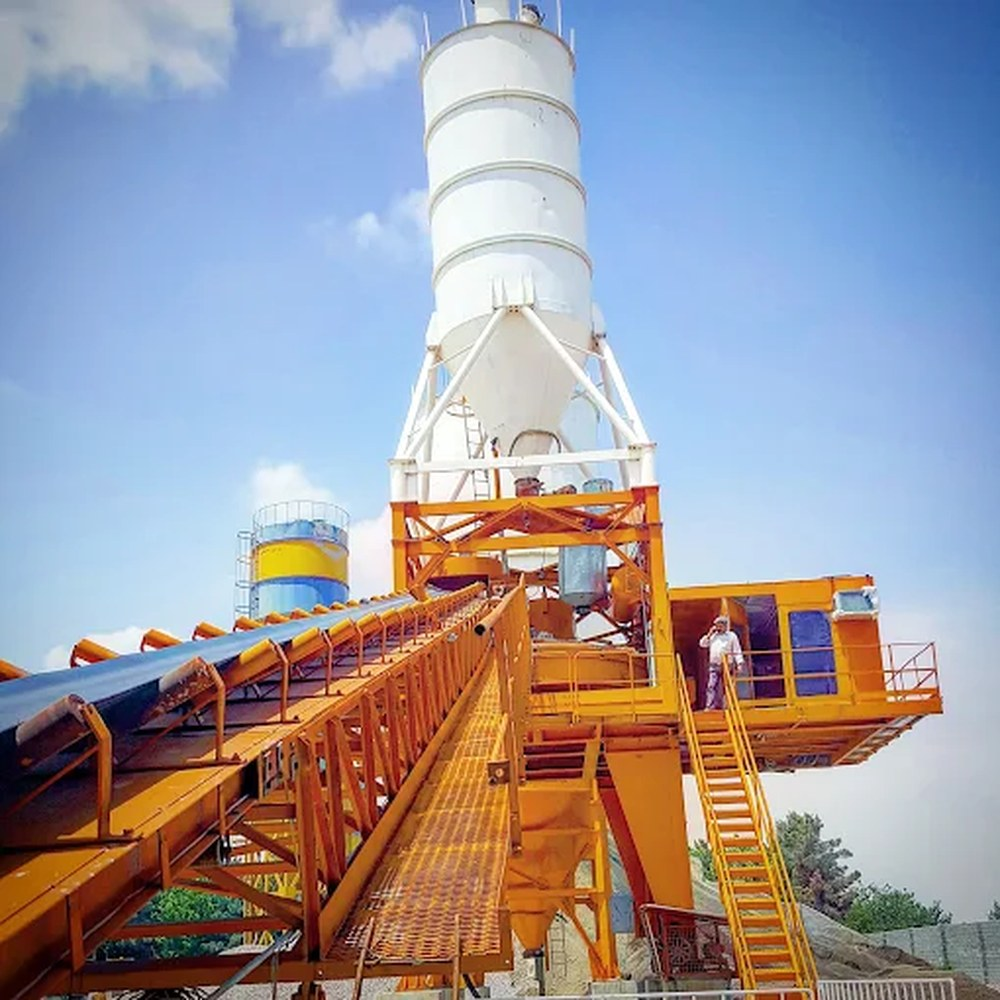
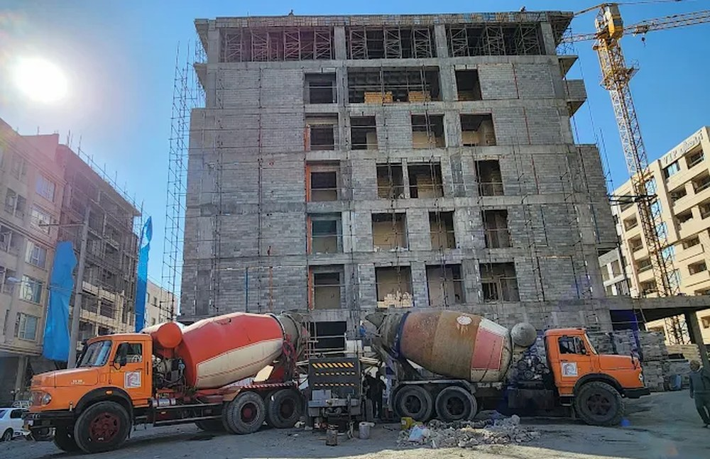
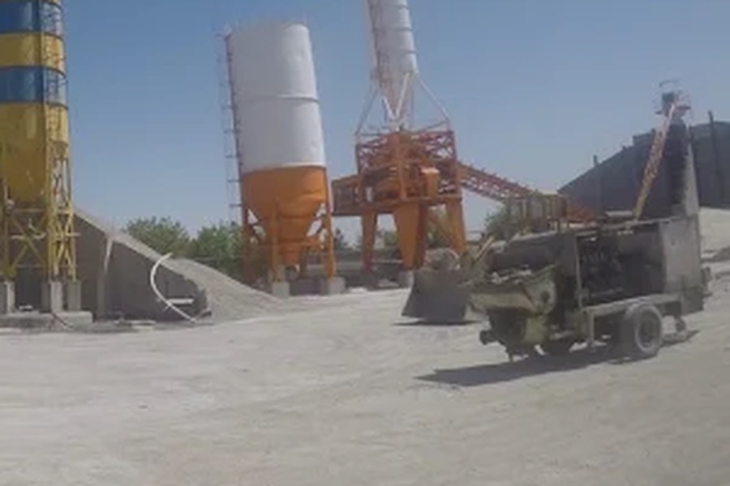
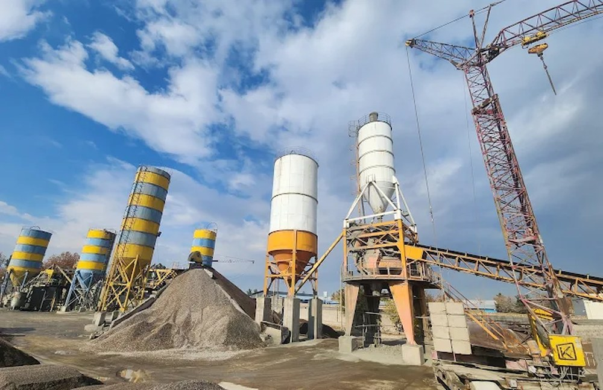
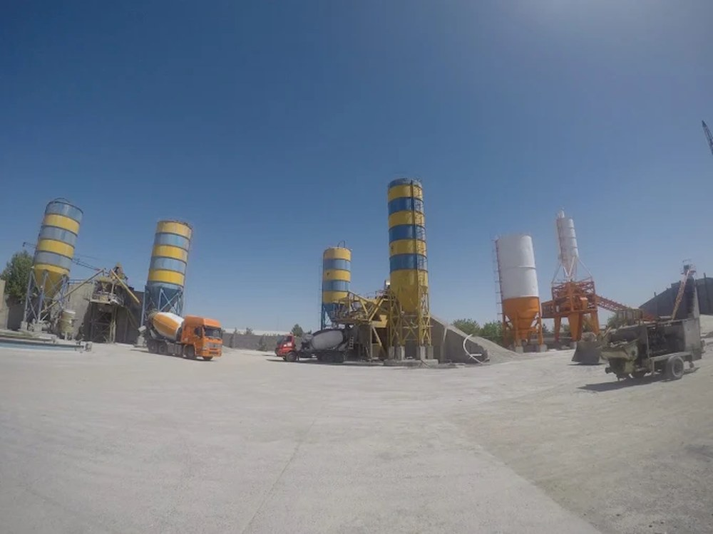
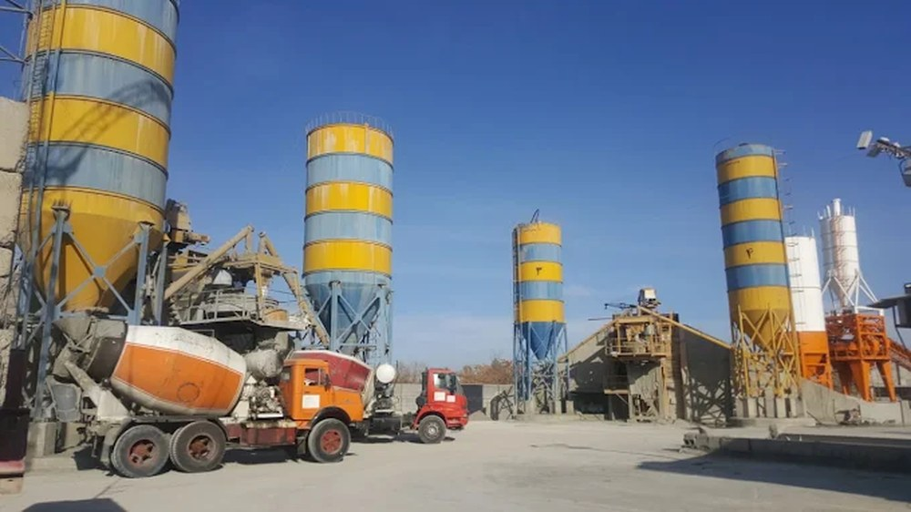
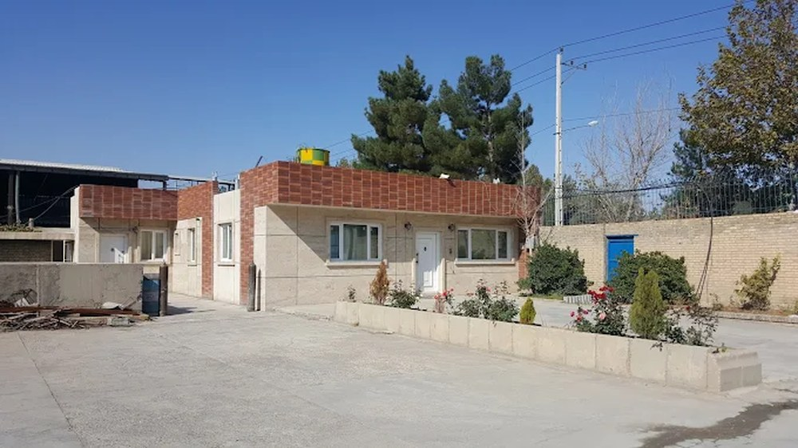

محاسبهگر BOM
محاسبه آنلاین حجم بتن و متریال
محاسبه آنی حجم فونداسیون، سقف، ستون و مخازن آب و فاضلاب به همراه آنالیز مصالح (سیمان، شن، ماسه و افزودنیها) در هر متر مکعب.
ورود به ماشینحساب ←تولید بتن آماده مطابق استاندارد ملی ایران ۶۰۴۴، خدمات حمل با تراک میکسر و پمپاژ در کلیه مناطق مشهد
پوشش ساختمان با الگوبرداری از برترین واحدهای تولیدی کشور، خدمات برآورد آنلاین و سفارش مهندسی را در اختیار شما قرار میدهد.
محاسبه آنی حجم فونداسیون، سقف، ستون و مخازن آب و فاضلاب به همراه آنالیز مصالح (سیمان، شن، ماسه و افزودنیها) در هر متر مکعب.
ورود به ماشینحساب ←عرضه بتن در ردههای C20 تا C35، بتنهای با دوام بالا، بتن خودتراکم (SCC) و بتن ویژه آببند مخازن آب شرب و سپتیکهای فاضلاب با سیمان تیپ ۵.
مشاهده ردههای بتن ←راهنماهای تخصصی بتنریزی در اقلیم مشهد (هوای سرد و گرم)، کنترل کیفیت اسلامپ و اصول اجرای بتنهای نفوذناپذیر در مخازن هیدرولیکی.
مطالعه مقالات مهندسی ←پوشش ساختمان یک مجموعه تولید بتن در مشهد است که فعالیت اصلی آن تولید بتن آماده برای پروژههای ساختمانی و عمرانی است. کارخانه به سه دستگاه بچینگ پلنت، ناوگان میکسر و پمپ بتن مجهز است و خدمات خود را در تمام مناطق مشهد ارائه میدهد.
شرکت سهامی خاص، ثبتشده در مشهد در سال ۱۳۶۱.
سال ثبت از منابع عمومی گرفته شده؛ سابقه فعالیت در حوزه بتن و متن معرفی نیازمند تأیید شرکت است.
تجهیزات مجموعه برای تولید، حمل و پمپاژ بتن در پروژههای شهری مشهد.

تولید پیوسته انواع ردههای بتن با توزین دیجیتال

تحویل بتن با تراک میکسر استاندارد در سراسر مشهد

پمپاژ هوایی و زمینی برای فونداسیون، ستون و سقفهای مرتفع
تأمین بتن پروژههای عمرانی بزرگمقیاس و انبوهسازی
تصاویر فعلی نمونه هستند و با عکسهای واقعی شرکت جایگزین میشوند.






مشخصات فنی بتنریزی خود را ثبت کنید تا پیشفاکتور رسمی صادر شود.